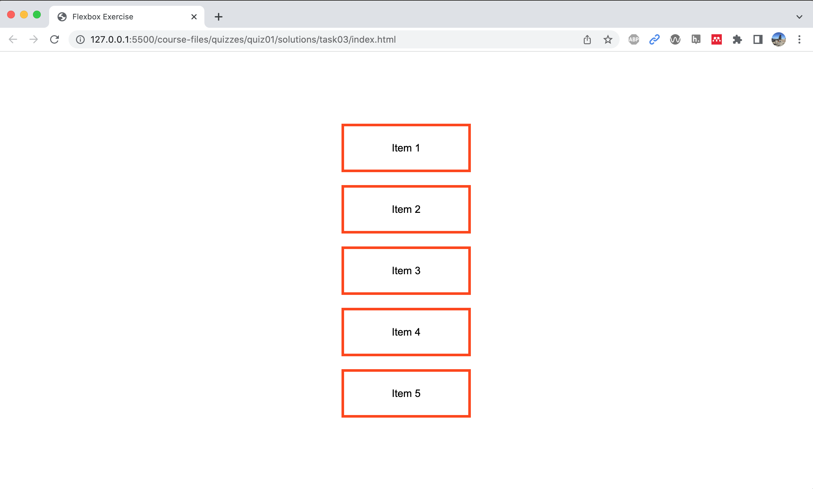
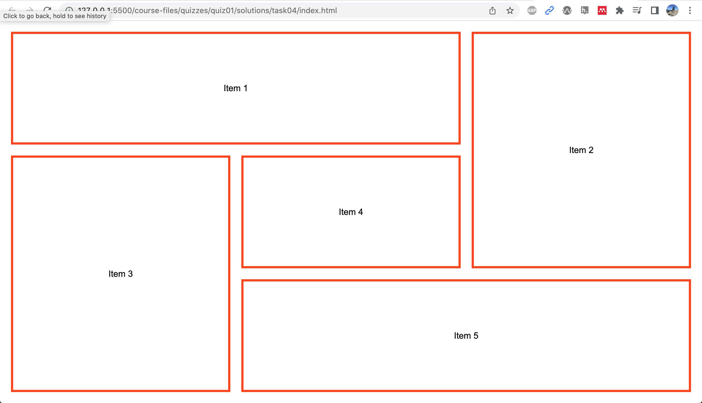
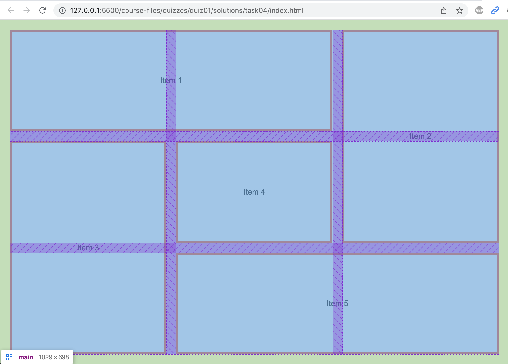
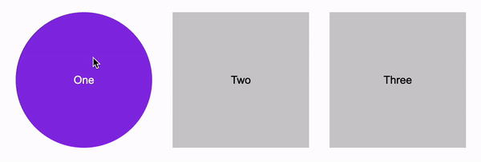
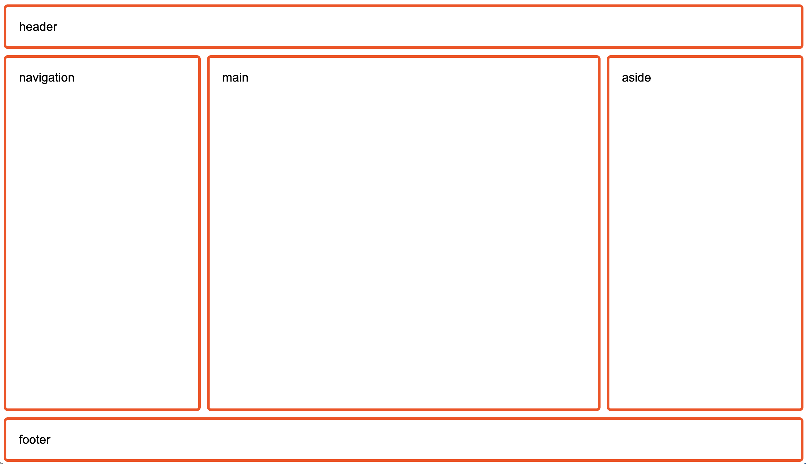
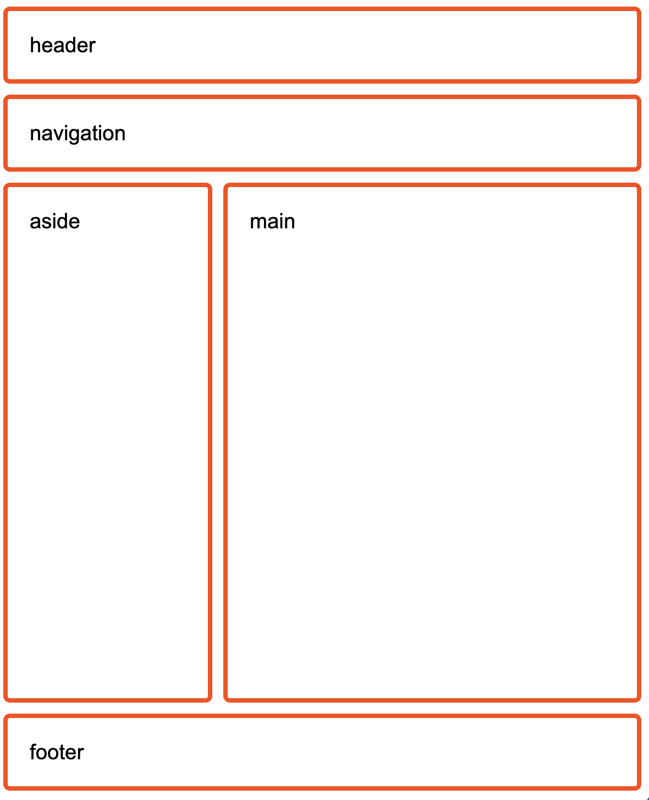

Practice for Quiz 2
To study for Quiz 2, please complete the practice quiz by downloading the starter files and following the instructions (below). If you have questions, please ask during class time or in office hours.
[25pts] Task 1. Flexbox
Open the
task01 folder and use
flexbox to produce the layout shown below.
-
You may only edit the stylesheet (
styles.css). Do not edit anything insideindex.html. -
Centering the text horizontally and vertically within
each
sectiontag is optional.

[25pts] Task 2. CSS Grid
Open the
task02 folder and use
CSS Grid to produce the layout shown below (note that the
gridlines in the second images are just to help you
understand the layout).
-
You may only edit the stylesheet (
styles.css). Do not edit anything insideindex.html. -
Centering the text horizontally and vertically within
each
sectiontag is optional.


[25pts] Task 3. Transitions
Open the
task04 folder and
create the following transition effects:

[25pts] Task 4. Responsive Layout
Open the
task05 folder and
create the following responsive layout for Desktop and
Tablet. Assume that the tablet layout starts as
max-width: 800px:
Desktop

Tablet

What to Submit (if this were a real quiz)
If this were the real quiz, you would commit and push your changes (like we’ve been doing in class). Then, you would paste each of the 5 links into the Quiz 2 section:
- A link to your homepage